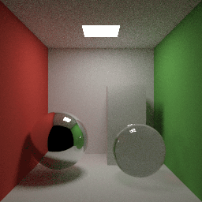

1Where Mithril comes from
Every modern processor is a crowd. A desktop chip runs sixteen hardware threads; a graphics card runs tens of thousands of lanes. Most software still describes its work as a single queue of instructions, because the alternative is where the hardest bugs live. Splitting a program by hand means threads, locks and work queues, and a mistake in any of them produces a data race: an answer that depends on which core happened to finish first.
In 1990 the French logician Yves Lafont proposed a model of computation in which that kind of bug cannot be written. Building on Jean-Yves Girard's linear logic[2], he described programs as interaction nets[1,3]: graphs of small agents joined by wires. Each agent has one special connection, its principal port, and computation happens only where two principal ports meet. A rule replaces the meeting pair with a small new graph and reconnects the wires that led into the pair; no other agent is touched. Two rewrites can never involve the same agent, so they can happen in either order, or at the same moment, and the net still reaches the same result. Parallelism belongs to the model itself.
For three decades the idea lived mostly in papers. Victor Taelin's HVM, the Higher-order Virtual Machine, and the Bend language built on it[4,5] put interaction nets on modern hardware, running programs across CPU cores and GPUs with no parallel annotations. They also made the price visible. A net runtime pays for every rewrite: adding two numbers means allocating agents, matching a rule and rewiring the graph, which costs far more than the addition. Bend 2 answers that price by leaving nets behind: it compiles each program to a single C file for CPU and GPU, with no net at run time[6]. The parallelism no longer comes from the model's rules.
That leaves the original question open. Can interaction nets themselves scale, keeping their guarantee that any order of work gives the same answer, while running as fast as ordinary compiled code? Mithril is built to answer that question, and it holds itself to the strict test: how many cores it needs to beat a good sequential C program of the same algorithm[7].
Mithril keeps the interaction-net thesis: the rules define what a program means and supply its parallelism. Where it differs is when the rules run. The compiler applies every rule whose inputs are written in the source: square(3) becomes 9 before the program starts. Rules that wait for input data, like square(n), are applied while the program runs, as plain machine code when the work is one sequence of steps, such as the arithmetic for a single pixel, and as a net when a value has several users or two calls can run at once, such as the two halves of a merge sort.
For the astute reader
The work described above is what a classical optimizing compiler already does: it folds constants, inlines small functions and removes branches whose outcome is known. That overlap is deliberate. It is the bet Mithril makes.
A classical compiler does this work in separate passes, each written by hand and each needing its own argument that it preserves the program's meaning. The order of the passes also changes the code that comes out; compiler writers call this the phase-ordering problem.
In Mithril each of those optimizations is a firing of the same interaction rules that define what the program means. The rules are confluent, so the compiler can apply them in any order and stop at any point, and the program it holds still means the same thing. Run to completion, every order produces the same residual program. Compilation becomes a deterministic computation, covered by the same Lean proof as the running program[9].
That split plays to the strengths of both sides. Interaction nets are good at exposing independent work and sharing results between consumers; processors are good at straight-line arithmetic in registers. Mithril gives each the part it does well, and because both halves fire the same rule table, the division cannot change a program's meaning.
2Mithril in ten minutes
Mithril's syntax is a subset of Python. Anyone who reads Python can read every program in this guide; the differences lie in what the syntax means. Values never change once made, nothing is shared by mutation, and there is no syntax for threads, tasks or devices. These eight pieces are the whole language surface.
def fib(n):
if n < 2:
return n
return fib(n - 1) + fib(n - 2)if c > 0:
return a
return bfor i in range(n):
s = s + f(i)p = (x, y, z)
a, b, c = pmatch.@data
class L:
Nil: ()
Cons: (h, t)def stage(c):
return lambda x: x * 3 + setup(c)array_set returns a new array and leaves the old one for its readers. If no other variable still refers to the old array, array_set writes into it directly instead of copying it.a = array_new(n, 0)
a = array_set(a, i, v)f32(x) makes a value single precision and the type spreads through the arithmetic.r = sqrt(f32(d))A first program
The ray tracer in the header is a few hundred lines of plain functions: vectors as tuples, one function per shape, a recursive function for each bounce of light. Its entry point is a pair of loops.
def main():
n = size()
img = array_new(n * n, 0)
for y in range(n):
for x in range(n):
img = array_set(img, y * n + x, pixel(x, y))
return (n, n, img)Nothing here names a thread. Each pixel(x, y) reads only the scene description and its own x and y, so Mithril may compute the pixels in any order, on any core or on the GPU. The writes into img form a chain, but each is a single store; the cost lives in pixel. The device and the thread count are chosen when the program runs.
How Mithril reads a program
Mithril runs two calculations at the same time whenever neither needs the other's result, so the useful question about any program is its shape: which calculations can start together, which must wait for an earlier answer, and what they share. The five problems below each have a different shape. Every animation runs the real problem, scheduled the way Mithril's runtime schedules it: a task starts as soon as its inputs exist and a worker is free.
Rendering: every pixel on its own
A ray tracer colours a pixel by firing a ray from the camera through it, following the ray as it bounces off the mirror sphere or bends through the glass one, and adding up the light it collects. The calculation reads only the scene description and the pixel's own coordinates; no pixel needs another pixel's answer. The program loops over the image row by row, but Mithril sees that the pixel(x, y) calls are independent and hands them to whichever worker is free.
Pixels are not equal. A ray that hits the back wall stops after one shadow test, while a ray that strikes glass splits into a reflected and a refracted ray, each traced further. The tiles over the spheres below cost several times more than the tiles over the walls. With one worker the frame fills in reading order. With more, a worker that finishes a tile takes the next one in the queue, so a slow tile over the glass sphere never delays the wall tiles queued behind it.
Merge sort: split, solve, combine
Merge sort orders a list by halving it until each piece is trivially small, sorting the pieces, and merging sorted halves back together; merging two sorted lists only ever compares their front elements. The two halves of any split have separate inputs, so they can be sorted at the same time. The merges cannot start until both of their halves are sorted.
That gives the computation a diamond outline. Each split doubles the work available, so four workers are busy while the pieces sort, and each merge halves it again until the last merge runs on a single worker. The busy-worker trace under the tree shows that rise and fall.
[8, 3, 6, 1, 7, 2, 5, 4]. A coloured tag shows which worker runs each step. Sorting example.Four queens: a search that grows as it runs
The puzzle asks for every way to place four queens on a 4 × 4 board so that no two share a row, column or diagonal. A backtracking search places one queen per row. Each legal placement opens a branch for the next row, and a board with no legal square left is a dead end.
Nobody knows the shape of this tree in advance; a branch exists only once its parent has been checked. A first queen in the corner leads to a dead end a row or two later; a first queen in the second column leads all the way to a solution. Mithril starts each new board as a task the moment it appears, so a worker that finishes checking a board immediately takes one of the boards the search has just produced. The search finds the puzzle's two solutions.
Nearest neighbours: many searches, one shared map
Given a set of stored points, find the closest one to each of many query locations. A k-d tree[13] makes this fast by cutting the plane in half again and again, alternating vertical and horizontal cuts, until each cell holds a few points. A query descends to the cell containing it, then backs out and checks a neighbouring cell only if that cell could hold something closer than the best point found so far.
The tree is built once and only read afterwards. Every query walks the same tree with its own best-so-far, so queries run side by side without locks or copies. Inside one query the visits are ordered, because each one decides whether the next cell is worth opening. Queries in crowded or awkward spots visit more cells, which gives the scheduler jobs of different sizes.
Collatz: a chain no worker can shorten
The Collatz rule halves an even number and replaces an odd one with three times itself plus one. Repeat it and the numbers rise and fall like hailstones until they reach 1. Starting at 6 gives 6 → 3 → 10 → 5 → 16 → 8 → 4 → 2 → 1.
def steps(n):
count = 0
while n != 1:
if n % 2 == 0:
n = n // 2
else:
n = 3 * n + 1
count = count + 1
return countEach step needs the number the previous step produced, so the chain is strictly serial: worker 1 computes the whole chain from 6 down to 1 while workers 2, 3 and 4 sit idle. A batch of different starting numbers is a different story, because chains for 6, 7, 8 and 9 never consult each other. They run side by side, and the longest chain sets the finishing time. A loop can take either shape; the dependencies decide which.
3Why the answer never changes
The glass shader in the ray tracer traces a reflected ray and a transmitted ray, then blends their colours. Either ray may finish first; the blend waits for both.
# From glass(); surface geometry and the total-reflection branch omitted.
mirror = trace(add(p, scale(n, eps())), reflect(d, n), depth - 1)
through = trace(sub(p, scale(n, eps())), rd, depth - 1)
return add(scale(mirror, f), scale(through, 1.0 - f))The colour calculation needs both arguments. Either result may arrive first.
Inside Mithril, that program is an interaction net. Agents connect through ports, one of which is the principal port. When two principal ports are joined they form an active pair, and a rule replaces the pair with a small net, reconnecting the wires around it. One replacement is one step of computation.
Mithril's rules are few. An erasure agent meeting a number deletes both, because nothing uses the number. Other rules apply a function, compute an arithmetic operation, select a branch or copy a shared value to two consumers. Because two active pairs never share an agent, firing one cannot disturb another.
(2 × 3) + (4 × 5)two independent multiplications6 + (4 × 5)(2 × 3) + 206 + 20 → 26both orders meet at the same resultThat local guarantee is the diamond property, and it implies confluence: every order of reduction that finishes ends at the same net. The scheduler can fire any ready pair on any core at any moment. For Mithril's core rules the property is proved in Lean[9] (chapter 8).
Reordering never regroups an expression. Splitting a fold, such as summing an array in chunks, does regroup it, so Mithril splits a fold only after proving that the operation is associative and has an identity in its actual numeric representation. Integer addition passes; floating-point addition, whose rounding depends on grouping, does not.
4One rule table at compile time and run time
Mithril applies its rules in two phases. While compiling, it applies every rule whose inputs are written in the source. While the program runs, it applies the rules that need input data. The program left after the first phase, the one that actually runs, is called the residual program.
In shade(n) below, only n comes from the program's input. The flag 1, the number 3 and the two helper functions are written in the source, so the compiler evaluates pick(1, square(3), n) to 9 before the program ever runs.
def square(x):
return x * x
def pick(c, a, b):
if c > 0:
return a
return b
def shade(n):
return square(n) + pick(1, square(3), n)n. The program that actually runs is n * n + 9, the residual program. Example source.This is specialization[8], evaluating a program with part of its input known. A conventional compiler does it with a list of separate passes. In Mithril each of those passes is a rule firing early, so they compose without coordination, and they cannot disagree with what the program would have computed at run time. A budget bounds the work; anything unfinished stays in the residual, which the Lean proof also covers.
Lowering then turns the residual into code shaped for the hardware. Straight-line arithmetic like n * n + 9 becomes a few native instructions on values in registers, with no agents allocated and no rules dispatched. Calls that open independent work become tasks, and values whose consumers are still pending stay in the net.
How the residual becomes native code, tasks and joins
A function that opens independent branches runs locally on a work budget. At supported points it pauses and offers its unfinished work to idle workers; its continuation records what to do when the results come back, and a join collects them, as in the colour example. When compiled code needs a field that the net has not produced yet, a bridge waits for it, and results from compiled calls flow back into waiting wires. Native code is a faster way to run part of the net; it computes exactly what reducing that part would.
Sharing work through closures
A data pipeline is built from stages. Each stage is configured once, with a setting c read at run time, and then applied to thousands of inputs. Preparing a stage is expensive: setup(c) folds a large table from the configuration. Applying it is cheap.
def stage(c):
return lambda x: (x * 3 + setup(c)) & 1048575Written this way, a strict language recomputes setup(c) inside every call, because the expression sits in the body of the lambda. A programmer can hoist it by hand. Mithril does not need that: setup(c) depends only on the captured configuration, so the sharing rules compute it once per stage and wire the result to every application. Nothing is cached by comparing expressions; the value has one producer and many consumers.
setup(c), blue blocks the per-input work. Pipeline source.Inspect the residual and the generated Rust
MITHRIL_NET_CORE=1 target/release/mithril net docs/examples/specialize.py
# shade = Op2(Add, Op2(Mul, Var(0), Var(0)), Num(9))
cargo run --release -p mithril-cli --example dump_gen -- \
docs/examples/specialize.py /tmp/mithril-specialize.rsCore is the compiler’s internal expression format: Var(0) is the argument and Op2 an operation on two inputs. The example supplies 5 at run time and returns 34. The generated function:
fn s_2(fuel: &mut i64, v0: i64) -> i64 {
let fl: i64 = 1i64;
let s2: i64 = v0.wrapping_mul(v0.wrapping_shr(8i64 as u32));
let s1: i64 = s2.wrapping_add(2304i64);
return s1;
}Integers are encoded as n << 8, so 9 becomes 2304. Generated names and encodings change between compiler revisions.
5What Mithril is good at
The same answer, every run
Confluent rules and immutable values mean no data races and no schedule-dependent results. Output at 1 thread, 16 threads and on the GPU is identical, bit for bit.No parallel code to write
Independent calls, proven folds and independent loop iterations become tasks on their own. The source has no threads, locks, pragmas or kernels.One source, two kinds of processor
The same file compiles to Rust for CPU workers and CUDA for an NVIDIA GPU, with one runtime model on both.Work done once
Compile-time reduction removes everything the input does not decide, and sharing rules keep closures from repeating their setup.Rendering on 1 thread, 16 threads and a GPU
Whitted ray tracing[11]
512×512 · 4 samples per pixel. Direct lighting, reflections and refraction. Tracer source.
Path tracing[12]

256×256 · 64 samples per pixel, up to 6 surface hits per path. Tracer source.
Ryzen 7 7800X3D and RTX 4090, 2 October 2026. FPS is 24-frame batch throughput, median of three runs after a warmup. Compilation excluded; returned pixels, GPU context setup and readback included. All frame pixels match across CPU and GPU. Measurements and reproduction.
| One frame | Mithril 1 | Mithril 16 | GPU (wall) |
|---|---|---|---|
| Path tracing, 256×256 × 64 paths | 2.149 s | 0.238 s | 0.335 s |
| Whitted, 512×512 × 4 samples | 0.264 s | 0.061 s | 0.871 s |
Medians of three built-artifact runs after a warmup, 2 October 2026, same machine. Compilation excluded; GPU wall includes context creation and readback. Raw samples.
The trend is the point: adding cores speeds up the same unchanged source many times over, and the heavier the work per pixel, the better it scales. The GPU computes identical pixels on both scenes.
Against a sequential C program
The fair test of a parallel language is how many cores it needs to beat a good single-threaded program of the same algorithm[7]. On a batch of nearest-neighbour queries over a shared k-d tree, Mithril trails the C program on one thread and passes it by a wide margin on sixteen.
| k-d tree, 218 points and queries | Time | vs C |
|---|---|---|
| C, 1 thread | 0.333 s | 1.0× |
| Mithril, 1 thread | 0.406 s | 0.82× |
| Mithril, 16 threads | 0.090 s | 3.7× |
| Mithril, GPU (wall) | 1.280 s | 0.26× |
gcc -O2, minimum of three wall-clock runs on 29 September 2026 (GPU: 2 October), builds excluded, outputs checked. A parallel C version has not been measured. Methods and samples.
Against Rust, on programs a general-purpose language must handle
| Program | Rust · 1 thread | Mithril 1 | Mithril 16 |
|---|---|---|---|
| Expression interpreter | 2.45 s | 1.23 s | 0.14 s |
| List merge sort and quicksort | 6.04 s | 1.43 s | 0.55 s |
| Heavily shared graph | 1.67 s | 1.91 s | 0.27 s |
| Depth-first search over adjacency lists | 0.86 s | 1.30 s | 0.25 s |
| Closures with shared setup | 0.29 s | 0.01 s | 0.01 s |
| Copy-on-write array versions | 1.00 s | 0.91 s | 0.91 s |
| Persistent map keeping old versions | 1.47 s | 1.55 s | 1.56 s |
| Serial mutual recursion | 0.29 s | 0.41 s | 0.41 s |
| Closures depending on every input | 0.01 s | 3.77 s | 3.83 s |
Exploratory corpus at ce63d1e, one wall-clock sample per lane, checked against a Python oracle. The Rust twins follow the shape of the Mithril source (Rc lists, boxed closures); a hand-tuned Rust program could be faster. Design §11.1 · harness.
The wins come from two places. Recursive work spreads across cores without any code to arrange it, and sharing rules keep a closure from repeating setup that depends only on what it captured. The losses are chapter 7's subject.
6Where to use it
Mithril fits by the shape of a computation, whatever its domain. It pays off when a program has plenty of independent work, each piece large enough to be worth scheduling, and especially when that work is irregular: unknown in size until it runs, or tangled with shared data that would otherwise need locks.
- Rendering and simulation batches. Ray and path tracing, per-element simulation steps, Monte Carlo sampling with hashed random numbers that reproduce exactly on any device.
- Recursive search and divide and conquer. Game-tree and constraint search, branch-and-bound, sorting and tree algorithms, where branches appear at run time and differ in size.
- Many queries over shared read-only structures. Spatial indexes, lookup tables, rule sets checked against many inputs.
- Code that needs locks elsewhere. Five programs that require locks or atomics in C and Rust are written in Mithril without either, each with C and Rust versions for comparison. Lockless programs.
- Irregular planning in machine-learning systems. Mixture-of-experts routing[17,18] (top-k gating, capacity limits, overflow), sparsity patterns and graph traversals share the k-d tree's shape: a read-only structure, partitioning and data-dependent branching, balanced by the scheduler instead of by atomics and sorts.
- Executable specifications of distributed algorithms. Ring and tree all-reduce[19] or expert all-to-all exchange are local rules on a graph. Mithril runs such an algorithm with the same rules on CPU and GPU and checks it against the oracle, as a specification and schedule simulator.
- Compiler passes and planning. A rewrite system over an intermediate representation is a rule table, and the compile-time reducer runs it.
A saved computation: the compiler-planning demo
The compiler-planning demo expresses choices about fusion, vector width, tile size and placement as a Mithril program. It saves an unfinished net, then resumes it with different orders of ready work; the viewer shows the actual reduction traces, final plans and occupied net slots, and an independent exhaustive solver checks each answer. Costs are a synthetic contract, not device timings.
python3 demos/compiler_planning/demo.py --out target/compiler-planning/demo
# Open target/compiler-planning/demo/demo.html7Where not to use it
| If you need | Why Mithril is the wrong tool today | Use instead |
|---|---|---|
| Dense matrix multiplication or attention | Scalar execution with no tensors, layouts or tensor-core lowering. | A kernel compiler or an optimized numerical library. |
| Long serial dependency chains | Each step needs the previous step's result, so a second core has no work to take, yet every step still pays for the runtime's bookkeeping. | A direct C or Rust implementation. |
| Tiny closures applied many times | Copying and reducing a closure can cost more than its arithmetic when every part depends on the new input. | Benchmark the exact shape first. |
| Shared mutable state, I/O or systems integration | Values only; the language is a compute surface without general I/O. | C or Rust around a Mithril computation. |
| SIMD or non-NVIDIA devices | CPU output is scalar baseline x86-64; GPU support targets one NVIDIA device. | Tools that expose those instruction sets and devices. |
The tables in chapter 5 show the same limits. A serial chain gains nothing from extra threads and still pays the runtime's overhead, so Rust stays ahead of it. A closure interpreter that builds new work for every input loses by orders of magnitude. And on a single thread Mithril trails sequential C, so its advantage only appears once there are cores to use.
On every workload in this guide, sixteen CPU threads outrun the GPU. Today the GPU's benefit is running the same program with the same results; closing its speed gap runs through the vectorization and per-lane work in chapter 10.
Memory needs watching too. Storage is reused when ownership allows, but keeping old versions of a value can force copies, and task records, net agents and queues all take space. A different reduction order can change peak memory even though the answer stays the same.
8Proved and checked
Three of Mithril's guarantees are proved or model-checked. The compiler, the extra rules and both runtimes are checked by running programs and comparing answers. Each proof below is stated in plain words first, then with an example, then with what it does not cover.
Proof 1 · The order of rule firings cannot change the result
Take any net built from Mithril's core rules. Fire its active pairs in any order you like: one worker or sixteen, the left multiplication before the right one or after it. If one order reaches a final net, every order reaches the same final net, in the same number of steps.
Example. In (2 × 3) + (4 × 5), computing 2 × 3 first or 4 × 5 first both end at 26 after the same number of firings. The proof says this holds for every program, not just this one.
Two consequences. If one order finishes, no order runs forever. And stopping part-way is safe: the compiler stops reducing when its work budget runs out, and the half-reduced program still reaches the same final net when the runtime carries on. That is what makes compile-time reduction a legitimate optimization.
How it is checked. A machine-checked proof in Lean 4[9], with no unproved steps and no added axioms. Proof and its scope.
Not covered. It does not prove that a program finishes. It covers the core rule table: erasing, copying, function application, arithmetic, branch and pattern selection, and calls. Some rules the implementation adds on top are not in the model, such as copying a closure and arithmetic that reads an operand through a wire. Nor does it prove that the Rust and CUDA code implements the modelled rules; tests check that.
Proof 2 · Splitting a loop into chunks gives the same total
When the compiler turns a loop like total = total + steps(i) into chunks that run on different cores, it first proves that the combining operation is associative and has an identity, so summing the chunks and adding the partial sums gives exactly the loop's own answer.
Example. The Collatz sum over 1 to 299,999 is split into ranges. Associativity means (a + b) + c = a + (b + c), so where the ranges are cut does not matter; the identity 0 makes an empty range harmless.
How it is checked. For each such loop the compiler writes a small Lean theorem, and mithril prove has Lean check it. A general lemma, proved once, says that folding chunks and combining their results equals folding the whole range.
Not covered. Only operations the compiler can prove are split: wrapping integer addition, also elementwise over tuples. Floating-point addition is never split, because rounding depends on grouping. A loop whose operation cannot be proved stays sequential.
Check 3 · The CPU runtime's lock-free handoffs have no races
Workers hand results to each other without locks. For the small functions that do this, every possible interleaving of the threads involved was explored, and in each one a join fires exactly once and sees all its inputs, and a shared value is freed exactly once, after its last reader.
How it is checked. Model checking with loom[10], which runs the code under every thread schedule and memory ordering. It found two ordering bugs, both now fixed. Runtime protocol functions.
Not covered. This covers those protocol functions, not the whole runtime, and not the GPU engine.
Checked by running programs
The compiler, the extra rules and both runtimes are checked by comparing their answers with an independent reference interpreter that evaluates the source directly.
- Compiled code gives the interpreter's answer. Every test program runs at 1, 4 and 16 threads and with tiny work budgets that force pausing, on CPU and GPU. Parity checks.
- Compile-time reduction keeps the meaning. Each test program is evaluated before and after the compiler's reduction, and the answers must match. Specializer tests.
- The extra rules also agree in any order. 10,000 randomly generated programs, each reduced in five different orders using the production rules, all match the interpreter. Schedule test.
The GPU engine implements its rules separately from the CPU rule source, and these tests hold the two together. The verification notes list each property that is checked only by tests and not yet proved.
10Future work
Each open problem below is a problem interaction nets in general must solve to scale, which is why Mithril is built to make them measurable: every change runs against a sequential C program, a reference interpreter and every backend.
Auto-vectorization of independent work
Mithril's CPU code targets baseline x86-64 with no AVX or FMA, and independent calls such as neighbouring pixels run as separate scalar tasks. Yet the net has already proved those calls independent, which is the fact an ordinary vectorizer works hardest to establish. The next step is to group tasks that run the same function on different inputs into SIMD lanes. The same grouping matters on the GPU, where 32 lanes of a warp execute in lockstep: profiles show that on irregular programs most warp instructions run with only a few of their 32 lanes active, while regular ones such as bitonic sort fill far more.
Per-lane efficiency
The deciding measure is how many cores Mithril needs to beat a good sequential program[7]. On one thread Mithril still trails sequential C. Closing that gap is a lowering problem: native code should use representations chosen from types instead of mirroring the net's cells, through general rules rather than per-program tuning.
One rule source for every device
The GPU engine's rules are a second implementation, held equal to the CPU's by tests. Generating both from one table, and linking that table to the Lean model, would turn a checked property into a constructed one. The Lean proof itself is still to be extended to Mithril's extended rules.
Machine-learning workloads
The planned probe is a mixture-of-experts router[17,18]: top-2 gating with capacity overflow over hashed logits, checked against a C twin on CPU and GPU, whose output is a dispatch plan of index buffers. Beyond it lies a division of labour with dense-kernel compilers, in which Mithril decides the irregular structure of a computation and the kernel compiler runs its dense math. Collective-communication algorithms as executable specifications and compiler passes as rule tables follow the same path.
Scaling the substrate
GPU startup spends tens of milliseconds creating a context, and rounds of global synchronization still serialize the device scheduler. Beyond one device, distributing a net across several GPUs or machines is an open research question; confluence says the answer will not change, and the work is to make it fast.
11Try it
Start with a computation you can check: render the tracer on one thread, sixteen threads and the GPU, and compare the images.
# From the repository root; drop --features gpu for a CPU-only build.
cargo build --release -p mithril-cli --features gpu
target/release/mithril run demos/cornell_whitted.py --threads 1 --image one.ppm
target/release/mithril run demos/cornell_whitted.py --threads 16 --image many.ppm
target/release/mithril run demos/cornell_whitted.py --gpu --image gpu.ppm
cmp one.ppm many.ppm && cmp one.ppm gpu.ppmThe build instructions cover the GPU requirements. The generality corpus has interpreters, persistent maps and closures to read, and the design notes record every mechanism and open obligation.
12References
- Y. Lafont. Interaction nets. Proc. 17th ACM Symposium on Principles of Programming Languages (POPL), 95–108, 1990. doi.org/10.1145/96709.96718
- J.-Y. Girard. Linear logic. Theoretical Computer Science 50(1):1–101, 1987. doi.org/10.1016/0304-3975(87)90045-4
- Y. Lafont. Interaction combinators. Information and Computation 137(1):69–101, 1997. doi.org/10.1006/inco.1997.2643
- V. Taelin and HigherOrder Co. HVM: a massively parallel evaluator for interaction combinators. github.com/HigherOrderCO/HVM
- HigherOrder Co. Bend: a massively parallel, high-level programming language (Bend 1, on HVM2). github.com/HigherOrderCO/Bend1
- HigherOrder Co. Bend 2. github.com/HigherOrderCO/bend
- F. McSherry, M. Isard and D. G. Murray. Scalability! But at what COST? 15th Workshop on Hot Topics in Operating Systems (HotOS), 2015. www.usenix.org/conference/hotos15/workshop-program/presentation/mcsherry
- N. D. Jones, C. K. Gomard and P. Sestoft. Partial Evaluation and Automatic Program Generation. Prentice Hall, 1993.
- L. de Moura and S. Ullrich. The Lean 4 theorem prover and programming language. 28th International Conference on Automated Deduction (CADE), 2021. lean-lang.org
- Tokio project. loom: concurrency permutation testing for Rust. github.com/tokio-rs/loom
- T. Whitted. An improved illumination model for shaded display. Communications of the ACM 23(6):343–349, 1980.
- J. T. Kajiya. The rendering equation. Proc. SIGGRAPH, 143–150, 1986.
- J. L. Bentley. Multidimensional binary search trees used for associative searching. Communications of the ACM 18(9):509–517, 1975.
- S. Marlow, P. Maier, H.-W. Loidl, M. K. Aswad and P. Trinder. Seq no more: better strategies for parallel Haskell. Proc. Haskell Symposium, 2010. hackage-content.haskell.org/package/parallel-3.3.0.0/docs/Control-Parallel-Strategies.html
- K. C. Sivaramakrishnan, S. Dolan, L. White, T. Kelly, S. Jaffer and A. Madhavapeddy. Retrofitting parallelism onto OCaml. Proc. ACM on Programming Languages 4 (ICFP), 2020. ocaml.org/manual/5.5/parallelism.html
- NVIDIA. CUDA C++ Programming Guide: writing CUDA kernels. docs.nvidia.com/cuda/cuda-programming-guide/02-basics/writing-cuda-kernels.html
- N. Shazeer, A. Mirhoseini, K. Maziarz, A. Davis, Q. Le, G. Hinton and J. Dean. Outrageously large neural networks: the sparsely-gated mixture-of-experts layer. ICLR, 2017. arxiv.org/abs/1701.06538
- W. Fedus, B. Zoph and N. Shazeer. Switch Transformers: scaling to trillion parameter models with simple and efficient sparsity. Journal of Machine Learning Research 23(120):1–39, 2022. arxiv.org/abs/2101.03961
- P. Patarasuk and X. Yuan. Bandwidth optimal all-reduce algorithms for clusters of workstations. Journal of Parallel and Distributed Computing 69(2):117–124, 2009.